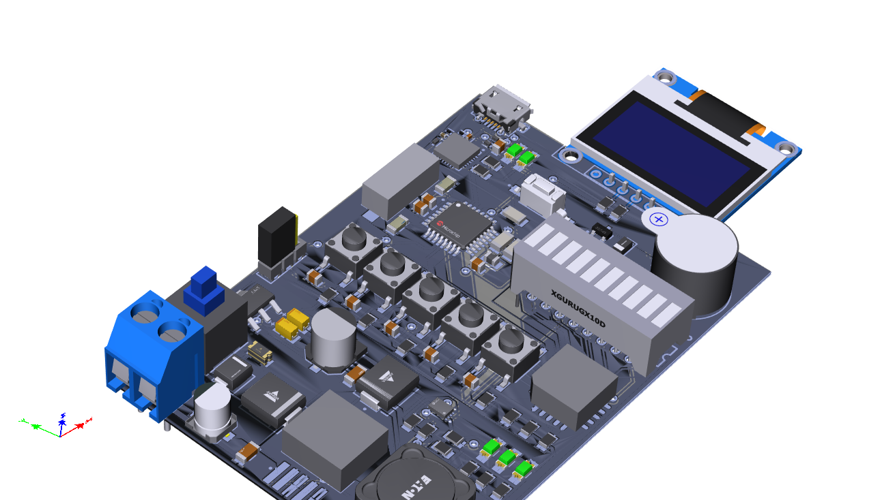

EMBEDDED SYSTEMS / ELECTRIC MOBILITY
Serious engineering.
Playful by design.
I write the firmware, chase the waveforms, and make things move.
This is a small, hands-on corner of my engineering world.
PREVIOUSLYPersian Gazelle
Electrical & Computer
Team Lead · Solar Car
THE LIVE LAB / 01
2D view · WebGL is unavailable
DRAG TO ORBIT · VISUAL SPEED × 1/60
SIX CELLS. ONE TEAM.
⌁DC INPUTCONNECTED
▰BATTERY100%
⏻LOADONLINE
GO ON. PULL THE PLUG.
INTERACTIVE EXPLAINERSIllustrative models, not hardware measurements.
OUTSIDE THE PLAYGROUND
Real code. Real hardware.
01 / MOTOR CONTROL
Single-shunt FOC
STM32F446 firmware, current sensing, and the motor-control stack.
02 / ENGINEERING TOOLSEngineering Copilot
Deterministic calculations and source-aware help for the engineering bench.
03 / OPEN HARDWARE
Robot Shield
Power protection, battery monitoring, and an ATmega328P at the heart.

04 / PERCEPTIONLiDAR × Camera
LD19–IMX219 fusion, a Pi camera relay, and laptop processing for metric ranging.